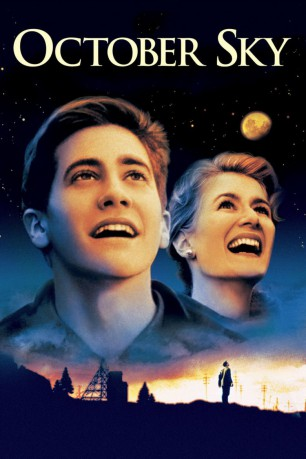

#5148 October Sky
 
 IMDB-Wertung: 7.8 / 10
IMDB-Wertung: 7.8 / 10  Tomatometer: 91
Tomatometer: 91  Metascore: 0
Metascore: 0 
Coalwood, West Virginia, 1957: Das örtliche Kohlebergwerk ist der größte Arbeitsgeber, und fast jeder männliche Bewohner arbeitet dort, oder wird es einmal tun. John Hickam ist der Leiter der Grube, und er hofft, daß seine beiden Söhne Jim und Homer eines Tages in seine Fußstapfen treten. Als Jim ein Stipendium für’s College bekommt, liegt es an Homer, den Traum ihres Vaters zu verwirklichen. Doch Homer hat ganz andere Ambitionen: Sein Wunsch ist es, eine Rakete zu bauen, die genau wie die sowjetische Sputnik bis ins Weltall fliegen kann…
Jahr: 1999
Dauer: 102 Minuten
FSK: 6
Land: USA Studio: Universal PicturesTonspuren:
Untertitel:
Auflösung: SD (704x352) Größe: 699 MB
Genre: Drama, Familie, Biographie
Regisseur:  Joe Johnston
Joe Johnston
Drehbuch: Joany Kane
Soundtrack:
Darsteller:
 Jake Gyllenhaal als Homer Hickam
Jake Gyllenhaal als Homer Hickam Chris Cooper als John Hickam
Chris Cooper als John Hickam Laura Dern als Miss Riley
Laura Dern als Miss Riley Chris Owen als Quentin
Chris Owen als Quentin William Lee Scott als Roy Lee
William Lee Scott als Roy Lee Chad Lindberg als O'Dell
Chad Lindberg als O'Dell Chris Ellis als Principal Turner
Chris Ellis als Principal Turner Elya Baskin als Ike Bykovsky
Elya Baskin als Ike Bykovsky- Courtney Cole-Fendley als Dorothy Platt
 Terry Loughlin als Mr. Dantzler
Terry Loughlin als Mr. Dantzler- Kaili Hollister als Valentine Carmina
- Don Henderson Baker als Jensen
- Neva Howell als Neighbor
- Brady Coleman als Anderson
- Douglas Swander als Corvette Guy
 Mark Jeffrey Miller als Vernon
Mark Jeffrey Miller als Vernon- Blaque Fowler als Reverend
- Tommy Smeltzer als Man at Mine
 Charles Lawlor als Miner
Charles Lawlor als Miner- Liz Byler als Ivy League Girl
 Frank Hoyt Taylor als Judge at Indy
Frank Hoyt Taylor als Judge at Indy- Dave Hager als Head Judge
 Andy Stahl als Jack Palmer
Andy Stahl als Jack Palmer- Wren Barnes als Science Fair Student , uncredited
 Ryder Davis als Man in Crowd , uncredited
Ryder Davis als Man in Crowd , uncredited- Natalie Canerday als Elsie Hickam
- Scott Thomas als Jim Hickam
- Randy Stripling als Leon Bolden
 David Dwyer als Jake Mosby
David Dwyer als Jake Mosby- David Copeland als Coach Gainer
- Tom Kagy als Lenny
- Donald Thorne als Trooper One
- Justin Whitsett als Kid
- Larry Rue als Neighbor
- Terry Nienhuis als Neighbor
- Rick Forrester als Roper
- Terrence Gibney als Basil Thorpe
- Keeli Hale Kimbro als Corvette Girl
- Don Tilley als Rescue Worker
- Rockford Davis als Chemistry Teacher
- John Bennes als Doctor
- Jonathan Fawbush als Barney
- Larry Black als Fred Smith
- Frank Schuler als Moonshiner
- Tom Turbiville als Miner
- Ida Ginn als Quentin's Mom
- Richard Lumpkin als Judge at Welch
- Mark W. Johnson als Union Official
- Don Taylor als Union Official
- Don G. Campbell als Mr. Morris
Datei: X:\1999\October Sky (1999, FSK6, 704x352).avi seit 23.12.2016
Festplatte: HD 1996-2002
 Es gibt insgesamt 81 Filme in der Gruppe '1999'
Es gibt insgesamt 81 Filme in der Gruppe '1999'